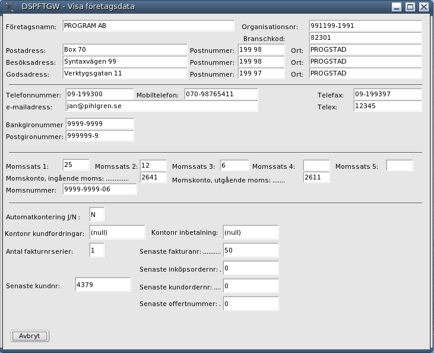
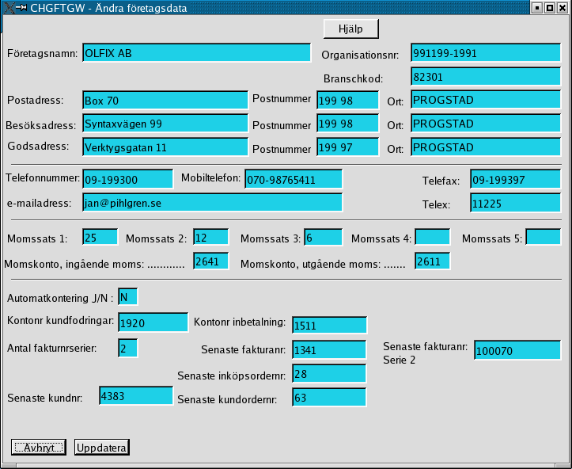
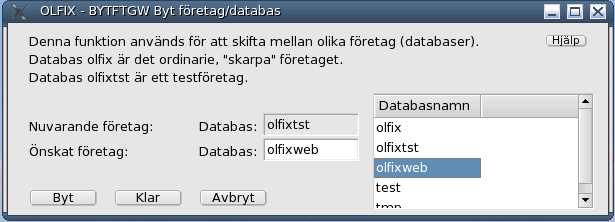
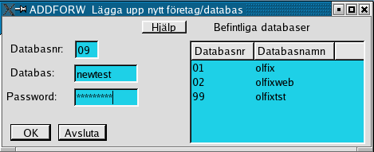
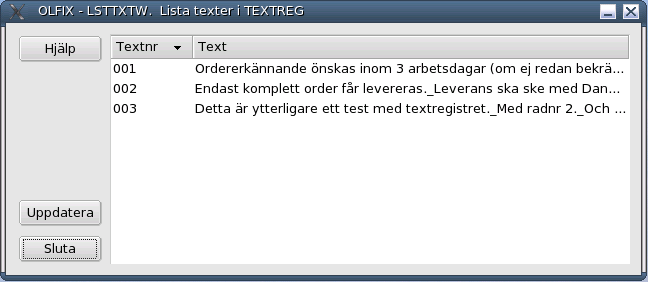
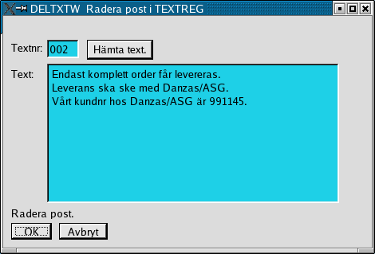

Order/Lager/Fakturering för Linuxsystem
Användarmanual
Kapitel Företagsadministration
Version 0.48
2007-07-13
This program is free software; you can
redistribute it and/or modify
it under the terms of the GNU
General Public License as published by
the Free Software
Foundation; either version 2 of the License, or
(at your option)
any later version.
Copyright 2004 Jan Pihlgren.
Nyupplägg av företagsdata
Visa företagsdata
Ändra företagsdata.
Byta företag.
Skapa nytt företag.
Lista företag/databaser.
Postbeskrivning.
Nya texter i textregistret.
Lista texter i textregistret.
Visa en text i textregistret.
Radera en text i textregistret.
I huvudet anges vilken databas/företag som påverkas.

Upplägg av företagsdata innehåller något begränsat antal fält. Fyll i fälten , spara och öppna sedan CHGFTGW (Ändra företagsdata) och komplettera med övriga uppgifter, så som senast inköpsordernummer, senaste kundnummer mm.
I huvudet anges vilken databas/företag som data gäller för. 
Informationen i tabellen FTGDATA används av olika OLFIXprogram.
Text inom [ ] anger fältnamn i databastabellen FTGDATA.
Momssats 1 - Momssats 5: Anger momssats i % (procent). [MOMS1 - MOMS5]
Momskonto, ingående moms och Momskonto, utgående moms: Konton i redovisningen där momsen redovisas. [MOMSI, MOMSU]
Momsnummer: Momsregistreringsummer. [MNR]
Automatkontering J/N: Värdet används vid registrering av leverantörsfakturor. [AUTOK]
Kontonr kundfordringar: Konto för redovisning av kundfordringar.[KFKTO]
Kontonr inbetalning: Det konto som normalt används för inbetalningar. [INKTO]
Antal fakturanrserier: Anger antal nummerserier för kundfakturor, normala och för faktoring t ex. [FKNRS]
Antal kan vara 1 eller 2.
Senaste fakturanr: Senast använda fakturanummer (normalt). [FAKNR]
Senaste fakturanr serie 2: Senast använda fakturanummer (faktoring).[FKNR2]
Se vidare Postbeskrivning.
I huvudet anges vilken databas/företag som påverkas.

Informationen i tabellen FTGDATA används av olika OLFIXprogram.
Ändra informationen i önskat fält och tryck på Enter.
När all ändring är klar klicka på Uppdatera för att spara gjorda ändringar.
Text inom [ ] anger fältnamn i databastabellen FTGDATA.
Momssats 1 - Momssats 5: Anger momssats i % (procent). [MOMS1 - MOMS5]
Momskonto, ingående moms och Momskonto, utgående moms: Konton i redovisningen där momsen redovisas. [MOMSI, MOMSU]
Momsnummer: Momsregistreringsnummer. [MNR]
Automatkontering J/N: Värdet används vid registrering av leverantörsfakturor. [AUTOK]
Kontonr kundfordringar: Konto för redovisning av kundfordringar. [KFKTO]
Kontonr inbetalning: Det konto som normalt används för inbetalningar. [INKTO]
Antal fakturanrserier: Anger antal nummerserier för kundfakturor, normala och för faktoring t ex. [FKNRS]
Antal kan vara 1 eller 2.
Senaste fakturanr: Senast använda fakturanummer (normalt). [FAKNR]
Senaste fakturanr serie 2: Senast använda fakturanummer (faktoring).[FKNR2]
Se vidare Postbeskrivning.
OLFIX levereras med två företag/databaser, olfix och olfixtst. olfix är det skarpa företaget och olfixtst är ett testföretag för att kunna pröva olika funktioner utan att orsaka någon skada på det skarpa företaget OLFIX medger också möjlighet att arbeta med flera företag, skilda från varandra. Se Lägga upp ny databas/företag.

I fältet Önskat företag anger man numret på det företag man vill skifta till. Tryck därpå på Enter.
ADDFORW är avsedd att skapa grundförutsättningarna för att möjliggöra för användare att arbeta med flera företag. ADDFORW lägger också upp en ny fysisk databas i MySQL.
ADDFORW lägger även upp information i tabellen DATABAS, fälten DATABASNR och DATABASTEXT.
Dock läggs informationen bara upp i den nya databasen samt i den databas användaren råkar vara i när funktionen används.

Ange vilket nr databasen ska ha samt vilket namn databasen erhöll av DBAn(Databasadministratören).
Password ska vara det password som används för att administrera MySQLs databaser. Användaren måste också ha behörighet att skapa nya databaser.
LSTFORW visar vilka databaser som finns i datorsystemet. En eller flera kan vara OLFIXdatabaser för olika företag.
"ADR1" = "Postadress"
Upplägg av nya texter i textregistret.
I fältet Textnr skrivs ett 3-siffrigt nummer in. Numret får inte vara upptaget sedan tidigare.
Sammanställning av vilka texter som finns i textregistret.

Genom att klicka på en text öppnas programmet DSPTXTW och kan visa hela texten.
När programmet visar sig med ett textnr så tryck Enter så hämtas den texten och visas.
Radera en text i textregistret.

Fyll i Textnr för den text som skall raderas. Klicka sedan på knappen Hämta text.
Tabellen till höger visar vilka företag som finns att byta till.
För att genomföra bytet så klickar man på knappen Byt.
När skiftet är klart klickar man på knappen Klar.
Om man ångrar sig så klickar man på knappen Avbryt.

olfix är, en från början tom databas, som levereras med OLFIX-programmen. olfix är tänkt att vara den första skarpa databasen/företaget.
olfixtst är ett testföretag, även det levererat med OLFIX-programmen. Testföretaget är tänkt att användas för testning av olika funktioner i OLFIX.
Andra databaser på bilden har inte med OLFIX att göra.
På det egna företaget/organisationen kan det vara lämpligt att döpa databaserna till företagslika namn så det blir lätt att veta vilken databas som är en OLFIXdatabas.

"ADR2" = "Postnr till Postadress"
"ADR3" = "Ort till Postadress"
"ADR4" = "Besöksadress"
"ADR5" = "Postnr till Besöksadress"
"ADR6" = "Ort till Besöksadress"
"ADR7" = "Godsadress"
"ADR8" = "Postnr till Godsadress"
"ADR9" = "Ort till Godsadress"
"AUTOK" = "Automatkontering J/N"
"BF1" = "Bokföringsperiod 1"
"BF2" = "Bokföringsperiod 2"
"BF3" = "Bokföringsperiod 3"
"BF4" = "Bokföringsperiod 4"
"BF5" = "Bokföringsperiod 5"
"BF6" = "Bokföringsperiod 6"
"BF7" = "Bokföringsperiod 7"
"BF8" = "Bokföringsperiod 8"
"BF9" = "Bokföringsperiod 9"
"BF10" = "Bokföringsperiod 10"
"BF11" = "Bokföringsperiod 11"
"BF12" = "Bokföringsperiod 12"
"BF13" = "Bokföringsperiod 13"
"BGNR" = "Bankgironummer"
"EML1" = "E-mailadress"
"FAKNR" = "Senaste fakturanr på kundorder"
"FKNRS" = "Antal fakturanrserier, normalt 1" Kan vara 2.
"FKNR2" = "Senaste fakturanr på kundorder,serie 2"
"FNAMN" = "Företagsnamn"
"FTGNR" = "Företagsnummer" Här anges företagets registreringsnummer
"INKNR" = "Senast använda inköpsordernummer"
"INKTO" = "Konto för inbetalningar, standard" Konto dit inbetalningar bokförs i normalfall
"KFKTO" = "Konto för kundfordringar"
"KORNR" = "Senast använda kundordernummer"
"MNR" = "Momsregistreringsnummer"
"MOMS1" = "Momssats 1"
"MOMS2" = "Momssats 2"
"MOMS3" = "Momssats 3"
"MOMS4" = "Momssats 4"
"MOMS5" = "Momssats 5"
"MOMSI" = "Momskonto, ingående moms"
"MOMSU" = "Momskonto, utgående moms"
"PGNR" = "Postgironummer"
"SKUNR" = "Senast använda kundnr"
"SNIKD" = "Branshtillhörighet"
"TELEX" = "Telexnummer"
"TFAX" = "Telefaxnummer"
"TFN1" = "Telefonnummer till vx" eller annat telefonnummer.
"TFN2" = "Mobiltelefonnummer"
"TFNMB" = "Mobiltelefonnummer"
"TFNVX" = "Telefonnummer till vx"
Här läggs texter som används av andra funktioner upp, t ex leveransvillkor, inköpsvillkor mm.

Numret är en pekare/referens till texten.
Genom att använda LSTTSTW kan man kontrollera vilket som är nästa lediga textnummer.
I fältet Text skrivs den text man önskar använda sig av i olika sammanhang.

Texten visa i rutan Text: så man kan kontrollera att det är den text man avsåg som kommer att raderas.
Avsluta med att klicka på knappen OK och texten raderas ur textregistret.